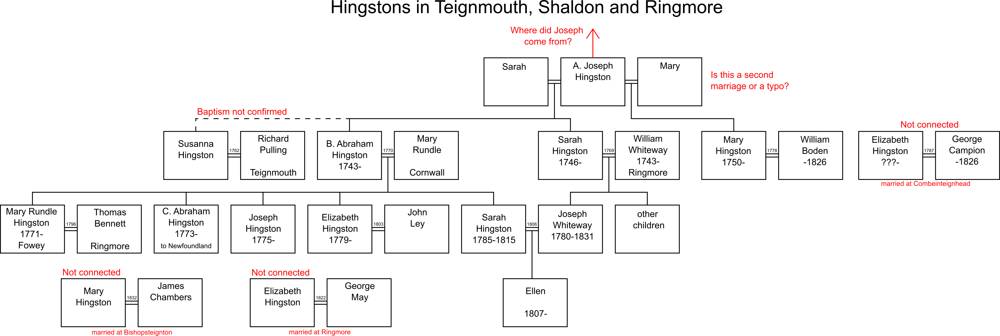

Hingstons near Teignmouth
We know that there was a small group of Hingstons in and around Teignmouth, north of Torquay on the South Devon Coast. The area includes Teignmouth itself, West Teignmouth, Shaldon, which lies across the river from Teignmouth, and the parish of Ringmore. Note that there are two Ringmore parishes - this one is not to be confused with the one in the South Hams. The parish at Shaldon is variously known as St Nicholas, Ringmore or Shaldon!
Some of the information here (noted as LD) comes from Liz Davidson <liz@davidson32.freeserve.co.uk> who is researching the Whiteway family.

St Nicholas, Ringmore (near Shaldon)
Checked by mistake (thinking it was the other Ringmore) but there are Hingstons there. It is from an index in the WCSL. The entries naturally fall into 4 generations.
Generation No. 1
A. JOSEPH HINGSTON
We don't know when or where Joseph was born, but from the dates of his children it would presumably have been between 1710 and 1725. There was HF#4. Joseph born in Thurlestone in Feb 1721, but he has an established family that would overlap with that described below, so it cannot be him. But his family does include an Abraham, and many of the Thurlestone men were mariners, so there may be a link somewhere.
It seems likely that Joseph was married before he came to Ringmore, to SARAH. The last child we know of was born in 1746, and he later had at least one child with MARY. We don't have marriage entries for either wife, or indeed a burial record for Sarah, and indeed it is not confirmed that it is the same Joseph
Joseph's children with Sarah are presumed to include:-
- SUSANNA HINKSON was married 15 Aug 1762 at West Teignmouth to RICHARD PULLING (DFHS)
- B. ABRAHAM HINGSTON was baptised 22 Oct 1743 at Ringmore, the son of Joseph and Sarah Hingston.
- SARAH HINGSTON was baptised 3 Feb 1746 (OS) at Ringmore, the daughter of Joseph and Sarah Hingston. (LD has this recorded as daughter of Abraham and Mary.) On 30 Dec 1769 at Ringmore Sarah Hingston, spinster, married William Whiteway, mariner. He had been baptised 11 Aug 1743 at Ringmore. The witnesses Mark Whiteway, Joseph Hingston. They had children Sarah (who later married Nicholas Mudge of Torquay who was also involved in shipping); Mark; Elizabeth; Joseph bap Ringmore 15 Feb 1780 (who later married his cousin Sarah Hingston 13 Jan 1806); Mary (1780-1816); John; Abraham Hingston and Thomas (1790-1791?). Mary & Elizabeth are mentioned in William's will though Joseph is the only son mentioned so it is possible all the other sons died in childhood. The William Whiteway is presumably the man who co-owned many vessels with B. Abraham (see below).
Joseph's children with Mary are presumed to include:-
- MARY HINGSTON was baptised 3 Aug 1750 at Ringmore, the daughter of Joseph and Mary Hingston. On 3 Feb 1778 she married WILLIAM BODEN (DFHS). He seems to have been a man of some property(LD). His will, written and proved in 1826, bequeathed to his wife messuage in Ringmore in which he now resides, Rich’s orchard, Madey, and the field called Chapley; also Short’s tenement and the field called Ham with the great tithe in the parish of St Nicholas and the messuage called Home’s Tenement late John Rowe’s in the parish of Stokeinteignhead and 3 closes of land called Forchest. Dwellinghouse in East Teignmouth in the possession of John Heck, Messuage called Prataway in the parish of Stokeinteignhead and messuage and rope house in Tormoham. He also left to his daughter Sarah Hingston Flamank ⅔ house called the ‘White Hart’ in the parish of Wolborough and ⅔ of a field called Pattens. To his daughter Elizabeth Ashford ½ of plantation in St Johns Newfoundland called Shiplings situate at Margetty Cove. To nephews John Whiteway, William Boden and William Wilking ½ of plantation in St Johns Newfoundland called Virginia or Battons Plantation.
- ELIZABETH HINGSTON married GEORGE CAMPION on 22 Jan 1787 at Combeinteignhead. Her baptism has not been found but she is most likely to have been born later in Joseph's life
Generation No. 2
B. ABRAHAM HINGSTON was baptised 22 Oct 1743 at Ringmore, the son of A. Joseph and Sarah Hingston. He seems to have initially been a mariner in his own right, but is later described as a merchant in association with his brother-in-law William Whiteway who is described as a mariner. On 23 Dec 1770 Abraham HINGSTON, mariner, of St. Nicholas, co Devon married Mary RUNDLE, by Licence, at Fowey in Cornwall (see Odds and Ends #43)
According to LD, the Exeter Shipping Register shows that Abraham owned several ships. It seems that most, if not all, of these vessels were involved in trade with Newfoundland.
- Diligent of Teignmouth. Square sterned brig Built Tingmouth 1785. Registered Exeter Feb 17 1787. 2 decks 2 masts. 114 tons. Vessel lost, register not saved. Owners: Abraham Hingston Merchant & William Whiteway Mariner and John Row of Stokeinteignhead.
- Ceres of Tingmouth. Square sterned brig built Ringmore 1787. Registered Exeter 17 Feb 1787. 2 decks 2 masts. 92 tons. This vessel was taken by the French. Recaptured by a squadron of His Majesty’s of War under the command of Sir John (Borlase Warren?) & restored to the owners by a decree of restoration from the High Court of Admiralty of England dated the 16 day July 1796. But the vessel seems to have been taken a second time by the French. Owners: Abraham Hingston Merchant & William Whiteway Mariner and John Row.
- Success of Tingmouth. Square sterned sloop built Trinity Newfoundland 1778. Registered Exeter Feb 17 1787. 1 deck 1 mast. 48 tons. Owners: Abraham Hingston Merchant & William Whiteway Mariner and John Row.
- Elizabeth & Sarah. Square sterned brig built Torbay 1794, originally registered at Dartmouth 1795, Registered Exeter May 26 1796. This vessel was taken by the Enemy (presumably France) as reported in September 1802. Owners: John Row, Abram Hingston & William Whiteway. A Joseph Hingston (his son?) appears to have joined the crew at Exeter.
- Tor Abbey of Tingmouth. Square sterned snow, built Ringmore 1799. 1 & half decks, 2 masts. 140&57/94 tons. Owners: Abraham Hingston, William Whiteway & Nicholas Mudge the younger of Tormoham Mariner.
- Success of Tingmouth. Square sterned brig, built Ringmore 1799. 1 & half decks 2 masts, 72&39/54 tons. Owners: Abraham Hingston, William Whiteway & John Row. Lost as appears in J Besley’s report dated 14 October 1805. Supposed to be run down by a Man of War convoying her from Newfoundland to Spain
- King’s Fisher of Tingmouth. Pink sterned schooner. Built at Conception Bay in the island of Newfoundland 1796, Registered 28 Feb 1799. 1 deck 2 masts 34&92/94 tons. Owners: Abraham Hingston, William Whiteway & John Row
- Success of Tingmouth. Square sterned brig. French built 1 deck 2 masts 78&62/94 tons. A prize, former name unknown. Registered April 24 1800. Owners: Abraham Hingston Merchant & William Whiteway Mariner and John Row. Broken up 1807.
- Ringmore of Tingmouth. Square sterned brig Foreign built. 2 decks 2 masts 113&13/94 tons. Owners: Abraham Hingston Merchant & William Whiteway Mariner and John Row. A Prize formerly called Le Chevreuil. The Ringmore was lost on a voyage from Newfoundland to Portugal as appears by certificate from William Whiteway 29 September 1806.
The children of Abraham and Mary Hingston include:-
- MARY RUNDLE HINGSTON, baptised 26 Nov 1771 at Fowey in Cornwall; parents Abraham (Mariner) and Mary. On 23 Jun 1796 Mary Rundle Hingston spinster married THOMAS BENNETT, bachelor, at Ringmore.
- C. ABRAHAM HINGSTON, son of Abraham and Mary Hingston baptized at Ringmore 25 Aug 1773. He appears to have emigrated to Newfoundland, at least temporarily, and is listed on the Newfoundland page. Subsequent generations have not yet been followed.
- JOSEPH HINGSTON was baptised 15 Nov 1775 at Ringmore.
- ELIZABETH HINKSON daughter of Abraham and Mary Hinkson baptized at Ringmore 12 Dec 1779. On 13 Oct 1803 She married JOHN LEY(DFHS).
- SARAH HINGSTON daughter of of Abraham and Mary Hingston baptized at Ringmore 21 Sep 1785. On 13 Jan 1806. Sarah Hingston, spinster, married Joseph Whiteway, bachelor. They were presumably cousins. Joseph Whiteway & Sarah Hingston had only one child, Ellen bap Ringmore 15 Nov 1807. Sarah died at the age of 30, and was buried in Ringmore 23 Jul 1816. Joseph died aged 51, buried 12 Feb 1831. His will left everything to Ellen, hedged with all sorts of long-winded provisos to prevent any future husband benefitting. Ellen married Richard Tapper Parsons on 14 March 1832. He was described as Attorney at law.
Generation No. 3
The following entries are preseumed to be children of Generation 2 but it is not known who their parents were.
- 8 Jan 1822. ELIZABETH HINGSTON married George May at Ringmore
- 2 Aug 1832. MARY HINGSTONE married James Chambers (DFHS) at Bishopsteignton
17 Oct 1835 (in the Western Times, Sat 17 Oct 1835): A very short item stated that Hingston, of Teignmouth, had been killed by falling from a building only seven feet high, and that his nephew, Arscott, had been killed in the same manner the previous week. "Both were respectable men". (Odds and Ends #54)
NB. The DFHS marriage index does not have any suitable entries for the marriage of either Abraham. More work is needed!
31 Mar 2023 Chris Burgoyne